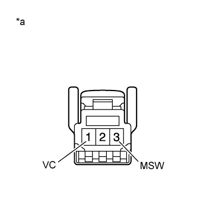

TILT AND TELESCOPIC MANUAL SWITCH > INSPECTION |
| 1. INSPECT TILT AND TELESCOPIC SWITCH |
|  |
Measure the resistance according to the value(s) in the table below.
| Tester Connection | Switch Condition | Specified Condition |
| 1 (VC) - 3 (MSW) | Tilt up | 342 to 378 Ω |
| Tilt down | 1890.5 to 2089.5 Ω | |
| Telescopic contract | 750.5 to 829.5 Ω | |
| Telescopic extend | 152 to 168 Ω |
| *a | Component without harness connected (Tilt and Telescopic Manual Switch) |